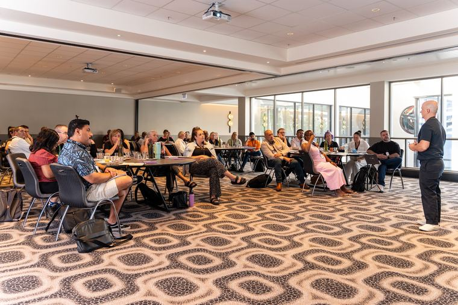
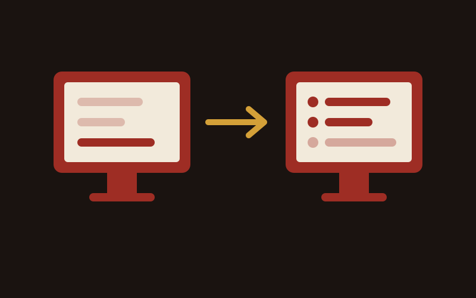

How to Grow an NDIS Business: 6 Key Areas
How to grow an NDIS business across six areas: referrers, intake, participant and staff retention, capacity and owner time, with a number for each.
Read more
A founder bottleneck in an NDIS business is when the owner still handles intake, rostering cover, compliance sign-off or the support coordinator relationships personally, so the business can only grow as fast as the owner's week allows. The fix is to choose your seat on purpose, hand over the repeatable work first and set rules for what counts as urgent.

I have been the bottleneck in my own business, so I am writing this from both sides of the desk.
A founder bottleneck is the point where decisions, relationships and approvals all route through one person, and growth stalls at that person's capacity. In an NDIS business it usually shows up in intake, rostering, compliance and referrer contact.
I explain it with a restaurant. "It's the same as someone who wants to open a restaurant because they love cooking and all of a sudden they're in charge of ordering and tax bills and rostering and not cooking."
If you started in care, nursing or therapy, the picture fits. I see it as a normal stage of a business growing up. The useful question is where you want to sit as it grows: the face of the business, or the operator. Pick one on purpose.
The clearest sign is work that waits for you. If enquiries, approvals or referrer calls sit until you get to them, you are the bottleneck. Here are the signs I look for:
I found one of these in my own business. An AI review of my team's Slack counted 6 permission requests in one week, and I said yes to all 6. So I removed the ask. My rule now: "If we book over something I didn't want to that's on me."
The leaders one comes from a workshop. I asked three co-founders, one at a time, what problem the business solves, and got three different answers. That gap became the whole agenda for the day.
NDIS owners end up doing everything one job at a time. You were the first intake officer, the first rosterer and the first person every support coordinator called. Each job stayed with you because it worked, and the steps stayed in your head.
Urgency makes it worse. One team I work with rang me five different times, and only one of those calls needed me that day. "Because urgency doesn't always equal better outcomes." When the owner treats everything as urgent, the team learns to send everything up as urgent.
More ideas won't fix it. I told one leadership team, "From an honest and candid view of things as is, no amount of ideas to fill the funnel will fix the bottle necks and competing priorities." Set who does what, how and by when first, then talk about new ideas.
Hand over the repeatable work first: inbox and calendar admin, routine intake questions, rostering cover and reporting. Keep the work that needs your judgement, and set rules so the rest stops coming back to you. Here is the order I use:
On step 2, an assistant can be a person or an AI tool, and the right pick depends on the task. I compare them in virtual assistant vs AI for NDIS providers, and cover setting up a VA in grow your business with virtual assistants.
On step 5, hiring one marketing manager to fix everything is what I call the weekend Bunnings project. "Do you wanna take an axe to all this... and rebuild very quickly? Or do you wanna just hope that you can build this little Bunnings project on the weekends and not get distracted by life?"
Compliance needs care. The NDIS Code of Conduct applies to providers, key personnel and workers (NDIS Commission (opens in a new tab)), so train anyone taking over that work on it, and check the Commission's guidance on key personnel before you move compliance decisions off your desk.
Keep referrer relationships by moving them from your phone into the business before you step back. Log every support coordinator, OT and hospital contact in your CRM, introduce the person taking over in person, and give that person a weekly touch target.
Relationships belong to the business. My rule for teams is "out of our inbox, into [the CRM]." If a referrer only knows your mobile number, the relationship leaves when you do.
Referrers keep a short mental list of providers they trust, and you fall off it if you go quiet. A target I set for one sales team was 20 active referral relationships, with at least one useful touch a week for each. Whoever owns that number after you step back needs time in their week to hit it. More on running this on my referrals and partnerships page.
If someone did every agreed activity and still missed the number, the plan is the problem. I ask, "Is it a them problem or a business problem?" Fix the plan before you blame the person or take the work back.
Check the numbers too. If participants leave as fast as new ones arrive, the bottleneck sits in delivery and retention, and handing over intake won't change it. I cover those numbers in key areas for NDIS business growth.
When I run Managed Growth for a provider, I describe my role like this: "I'm the PT for the next six months." I build the plan, the rules and the team's habits with you, then step back.
I can be blunt about who the bottleneck is, including when it is the person paying me. In my words, "I don't hold punches in the areas I believe they need to be thrown for the right reasons."
I still catch myself. The day before one planning call I took my son to the park, and caught myself reaching for my AirPods to take a call. "I nearly put my AirPods in and I was like, no." That is why I am building systems across my own business, and I will admit that trying to AI-ify everything "isn't a flick of a switch."
If you want to see where the business waits on you, start with my free growth audit. Get a free growth audit.
Stepping back is easier with senior help beside you, which is the role I take as a boutique NDIS marketing agency.
Look at what waits for you. If enquiries, approvals, rostering gaps or referrer calls sit until you get to them, you are the bottleneck. Two quick checks: take a day off and see what stops, and count how often your team asks permission for things you approve every time. When I counted mine, it was 6 requests in a week and 6 yeses.
Hire for the repeatable work that fills your week, such as inbox, calendar and routine admin. An executive assistant or virtual assistant handles that. Hire a manager only after someone senior has set the plan and defined the role, so the new person walks into a clear job. One manager hired to fix everything at once is the weekend Bunnings project I warn owners about.
Yes, if you move each relationship into the business first. Log every support coordinator in your CRM with notes, introduce the person taking over face to face, and give that person a weekly touch target, such as one useful contact a week for each of your top 20 referrers. Relationships that live only on your mobile leave with you.
Plan on months. I work with providers for an initial three months, because that is long enough to build the rules, hand over the first jobs and check the team is running them. The first handover, usually inbox and calendar, takes weeks. Referrer relationships take longest, because referrers need to see the new person turn up consistently before they trust them.
Registration adds obligations, so delegate with care. The NDIS Code of Conduct applies to providers, their key personnel and their workers, which means anyone you hand work to is held to the same standard. Train them on it before they take over. Before you move compliance decisions to someone else, check the NDIS Commission's guidance on key personnel for your registration.

How to grow an NDIS business across six areas: referrers, intake, participant and staff retention, capacity and owner time, with a number for each.
Read more

What a virtual assistant can take off an NDIS business owner's plate, which tasks to keep, how to protect participant data and how to measure it.
Read more

A task-by-task look at what a VA and AI each do well in an NDIS business, what they cost, how to protect participant data, and when you need both.
Read more